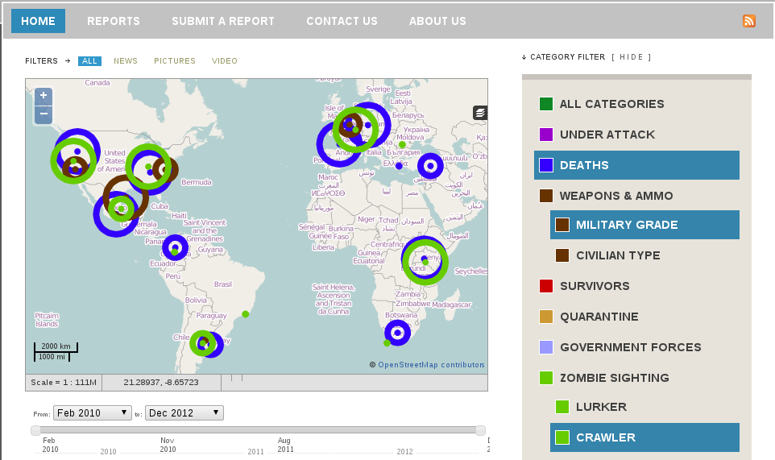

Getting Started
About
This is an experimental demo showing selection of multiple catagories can be implemented in Ushahidi Maps 2.7.2. It is currently in development. We do not reccomended it for use outside of development purposes.It allows users to select/deselcet multiple catagories and view them on the map. RHTP heatmap is a plugin for that generates a heatmap from active reports and embeds it in the main page.
Installation
A full version of Ushahidi-Web 2.7 is provided for developers who would like to experiment with selecting multiple catagories in ushahidi maps. After downloading the repository, follow the installation instructions provided by Ushahidi for your system. Alternativly, you can replace the following files in an existing install of Ushahidi Maps with ours: